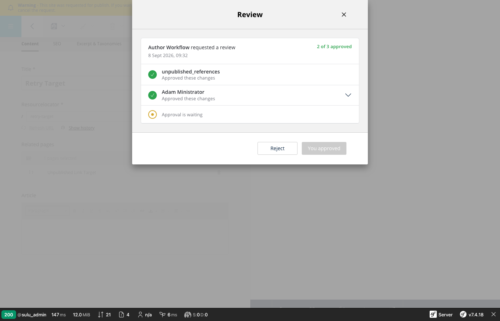
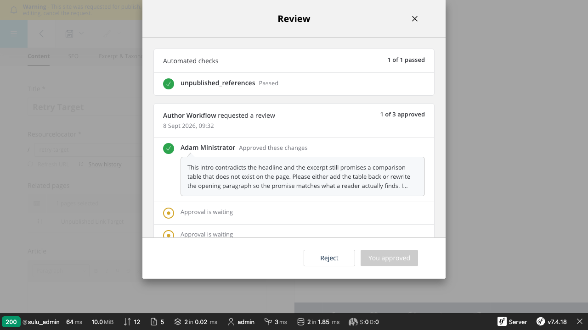
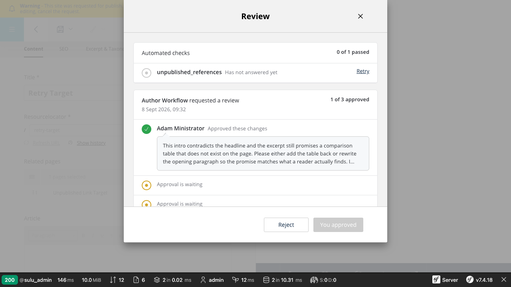
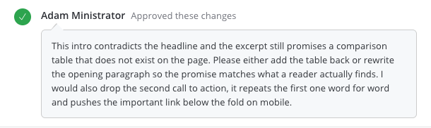
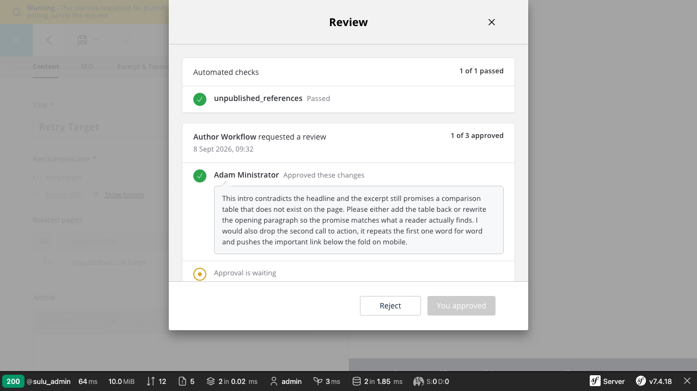
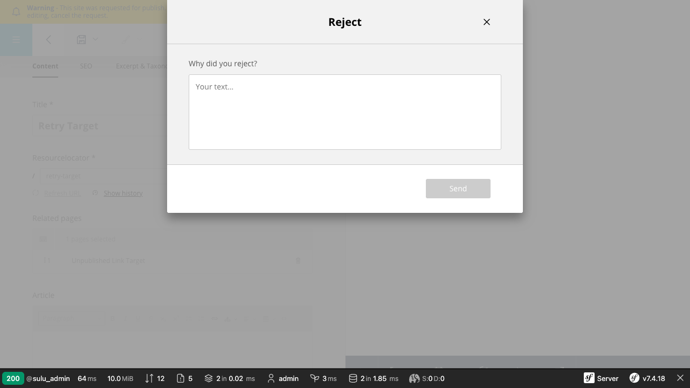

Request for publish — overlay designs
Screenshots taken from the running skeleton at https://127.0.0.1:8124/admin/, branch
feature/workflow-transition-request.
1. Pre-validation overlay
Opens whenever a pre-validator blocks a transition — on request_for_review,
on publish and on bypass_publish alike. Every configured check gets its own row,
the passed ones included, so the author reads what is already done as well as what is left.
2. Review overlay — two sections
Automated checks and people are two cards now. The check card is omitted entirely when the workflow configures no validators, so a simple workflow looks exactly as it did before.


Row states
| Marker | State | Used for |
|---|---|---|
| approved | a check that passed, a person who approved | |
| rejected | a check that reported a problem, a person who rejected | |
| pending (grey) | a check that has not answered yet | |
| waiting (amber) | an approval no person has given yet |
A check never borrows a person's wording: it reads Passed, Reported a problem or Has not answered yet rather than Approved these changes.

3. Comment as a speech bubble
The first three lines are always on screen. A longer comment ends in an ellipsis and expands on click, so a comment nobody opens is no longer a comment nobody reads. The tail points at the name of whoever wrote it.


4. Counting
Only people count towards the gate. A validator reports on the content, it does not stand in for a reviewer,
so its approval no longer moves the request towards approved and its rejection is still not a veto.
- The people card counts n of m approved, people only.
- The check card counts n of m passed, separately.
- The timeline labels a passed check Check passed instead of numbering it n of m.
- Every outstanding approval gets its own amber row, whatever the checks are doing.
required_approvals is now
required_human_approvals. The old name would have kept working while quietly meaning something
else, which is exactly the kind of change that should be loud. reviewer was not an option: in this
codebase a validator is a reviewer row, so required_reviewer_approvals would have been wrong.
5. No green text
The approval count was $seaGreen; it is $charade now, like every other count in the
admin. Green survives only as the fill of an approved status circle. The rejection count stays
$cardinal — say the word if that should go too.
6. Overlay height
Both overlays hug their content up to 436px and scroll past it, instead of always opening at a fixed 436px.
